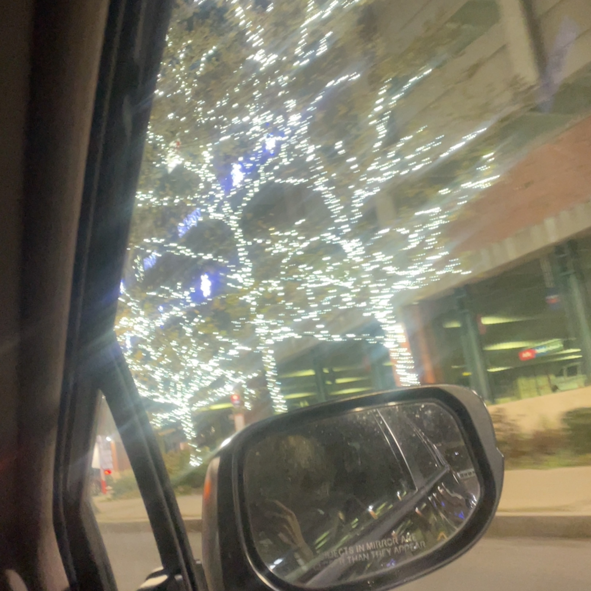
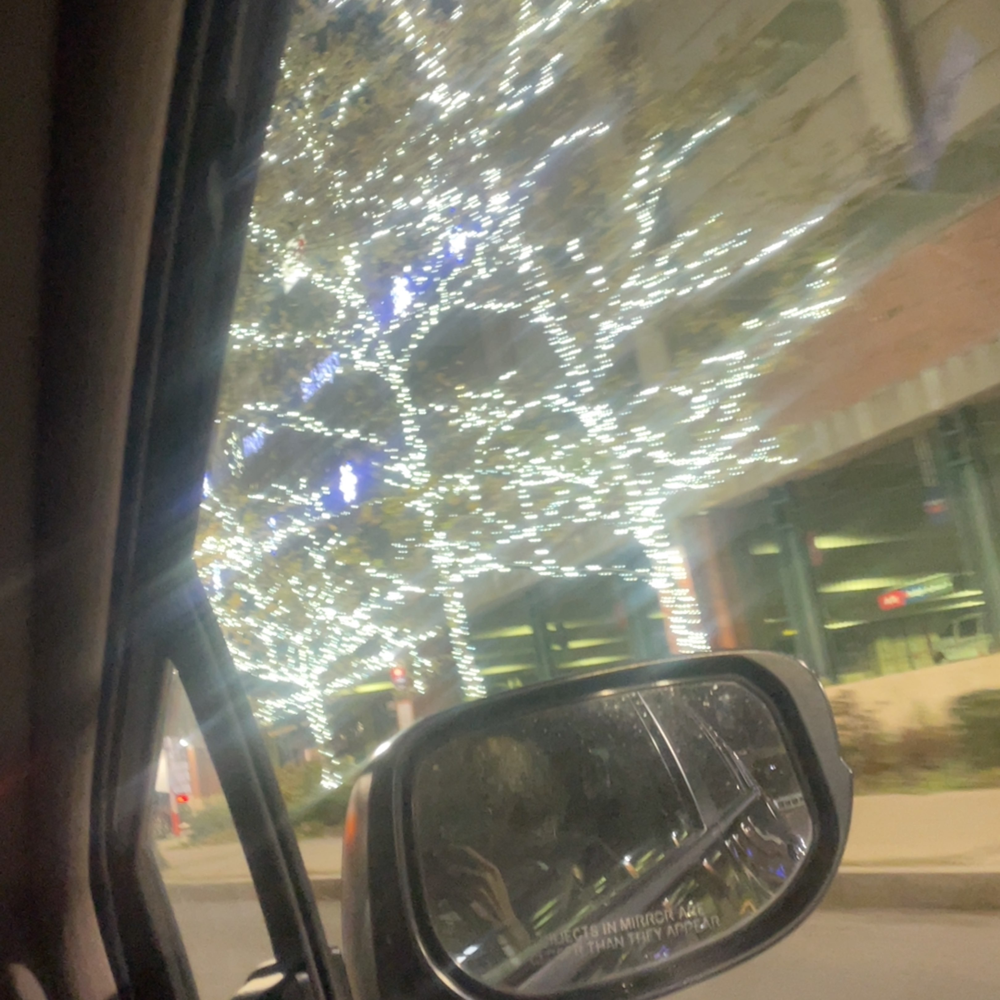

On my downtime I love listening to music, drawing, and going out. I also love taking photos when I go out on my Phone.
I mostly listen to music, thrift, and hang out with friends and family. Some music artists I like listening to is Sza, Steve lacy, Mac demarco, Frank Ocean, Tv girl, Wallows, Tame Impala, The neighborhood, deftones, 2pac, and Eminem. My music genre is pretty diverse and I basically listening to some of every genre except for country.Here are some photos and pictures of me doing some of my hobbies


 
